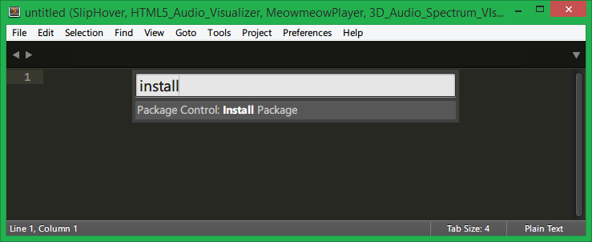
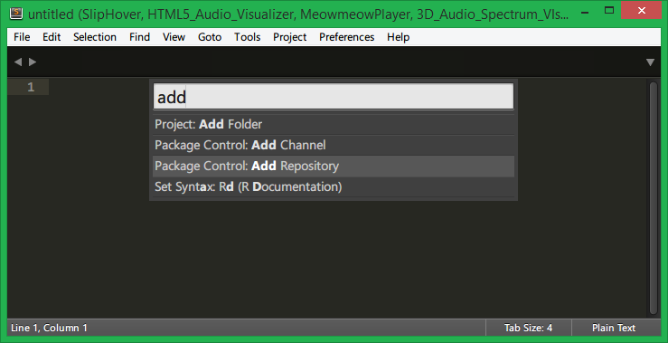
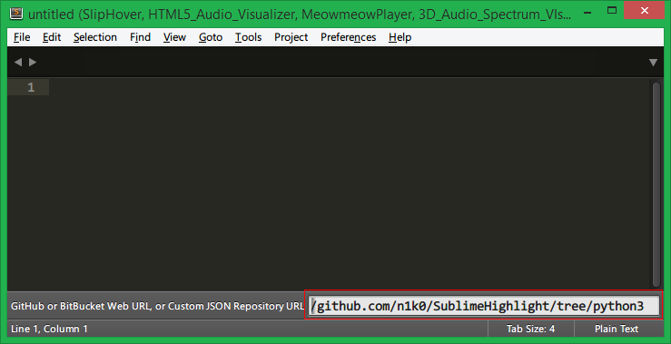
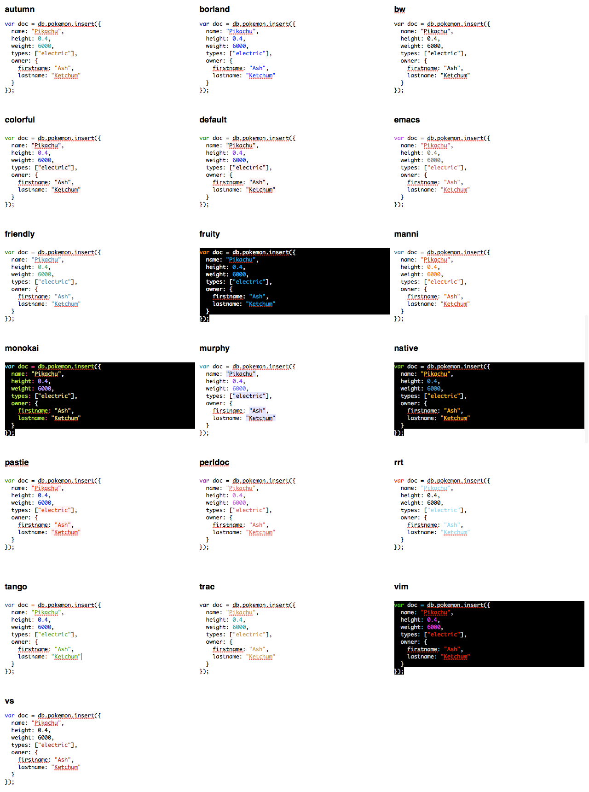
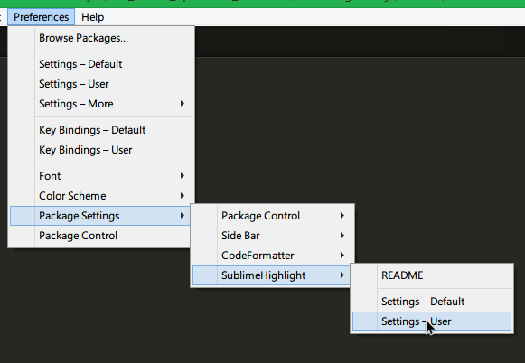
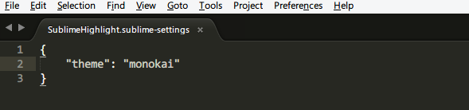
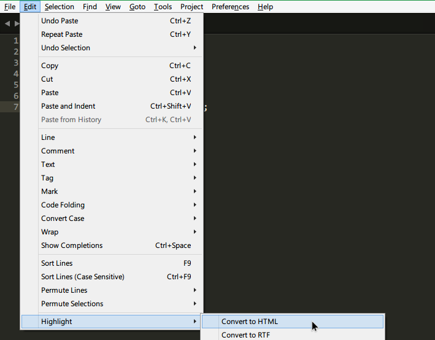
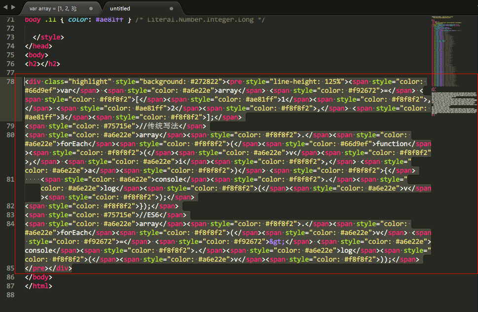

其它
如何在博客中使用SublimeText风格的代码高亮样式
安装sublimehighlight
我在博客里应用的样式是SublimeText编辑器里面的主题，这跟我用它来编写代码有关。其实如果ST支持复制为富文本形式的话，事情就要方便得多，直接copy然后paste到word里就把样式带上了，包括缩进，代码高亮等。遗憾的是它不支持。所以出路便是找一个可用的ST插件让它支持富文本复制。
好在ST流行度大，社区活跃，插件众多，还真有款能够完成我需求的插件--n1k0/SublimeHighlight。更详细的关于如何安装的问题等可见它的项目页面。
简单点其实跟安装其他ST插件是一样的，先Ctrl+Shift+P调出control panel，然后输入install package，不用输完，当输入了Install后便出来了，然后回车等待插件列表的显示，这个过程大概有个几秒钟的样子。

然后输入插件名称sublimehighlight，选中并进行安装。如果这一步进行顺利，则跳到下一节。
当你进行到上面一步发现搜不出该插件时，需要手动添加该插件的repo到本地。
具体做法是退出刚才的界面重新输入Ctrl+Shift+P调出control panel，输入add repository 选中并回车。

这时界面下方会出现输入repo地址的地方，将https://github.com/n1k0/SublimeHighlight/tree/python3输入后回车确定。

当提示添加成功后再次进行上面安装插件的步骤来到插件列表，输入sublimehighlight，选中该插件进行安装，如果一切顺利，恭喜你万里长征第一步走完！
设置喜欢的代码样式
安装完成后，可以设置你喜欢的样式，这个样式是你复制出来的样式，跟你在ST里面用的代码样式是没有关系的。也就是说最终复制出来的代码的样式以这个插件的设置为准。
可选的样式可以在插件的GitHub主页看到，下图直接来自其项目页面，图中包括了主题的名称和预览：

设置方法是依次点开preferences=>package settings=>sublimehighlight=>settings - user

会调出一个设置页面，输入喜欢的样式的名字，像下面这样：

当然，还可以指定要使用的字体等其他设置选项，同样，请前往插件主页进行参考。
将代码复制为HTML
像上面那样弄好后，最后一步，就是把代码复制成HTML形式放到博客里去啦！
依次点开edit=>highlight=>convert to html，此命令会将代码转成HTML形式。

之后，在新出来的标签中，请将class为highlight的div直接ctrl+c复制。这一块便是我们需要的东西。

最后，在写博客的时候，以HTML方式编辑博客，将刚才的内容进行粘贴。噢啦！